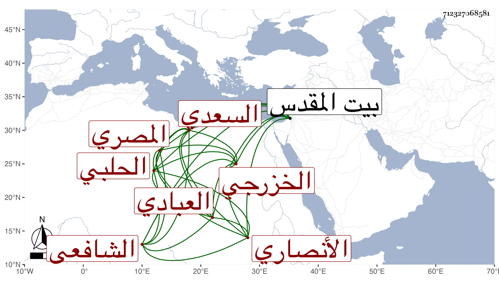

0902Sakhawi.DawLamic.ITO20230111-ara1.EIS1600.712327068581
Biography ID: 712327068581
463
عبد الرحيم بن علي بن أحمد بن عثمان زين الدين أبو نعيم بالتصغير بن العلاء أبي الحسن السعدي العبادي الأنصاري الخزرجي الحلبي الأصل المصري الشافعي سبط الشمس أبي أمامة بن النقاش وأخو عبد الرحمن الأصم الماضي ويعرف بابن النقاش . ولد سنة إحدى وثمانين وسبعمائة وتلا لأبي عمرو على بعض القراء واشتغل بالفقه والنحو والأدب على مشايخ أخيه بل ذكر أنه سمع البخاري ببيت المقدس على أبي الخير بن العلائي . وأجاز له الزين العراقي وله نظم كتب عنه البقاعي من نظم طبيب كان نصرانيا ثم أسلم لغزا في أباريق ، وأرخ وفاته في سنة أربع وخمسين أو التي قبلها وهو ممن قرأ على شيخنا في البخاري وقال في التبليغ له نفع الله به .
